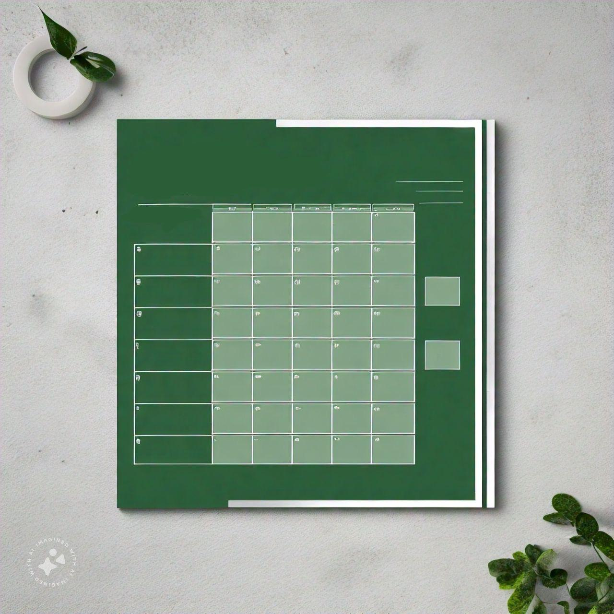
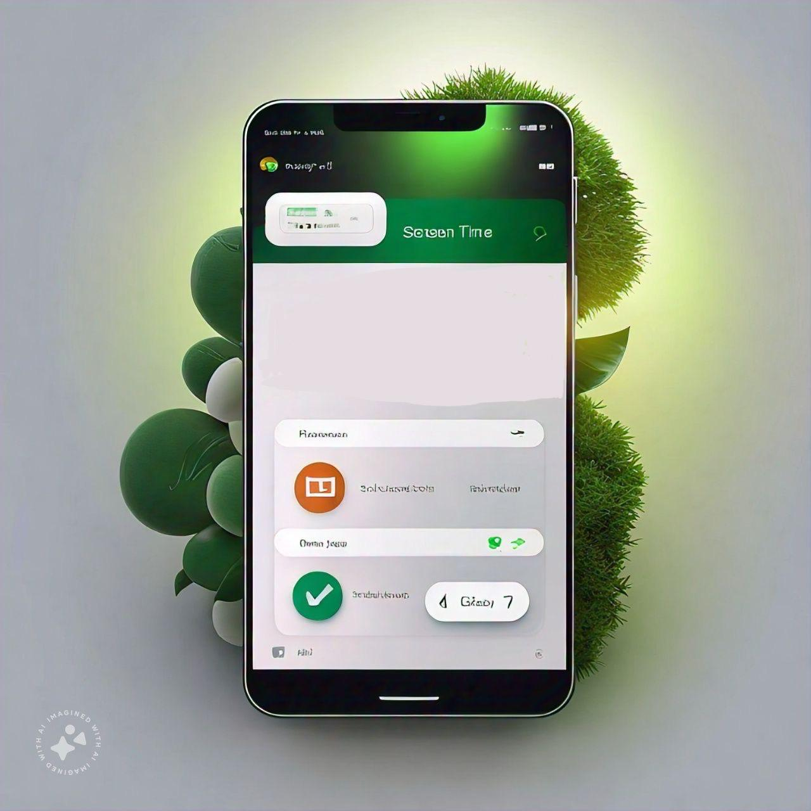
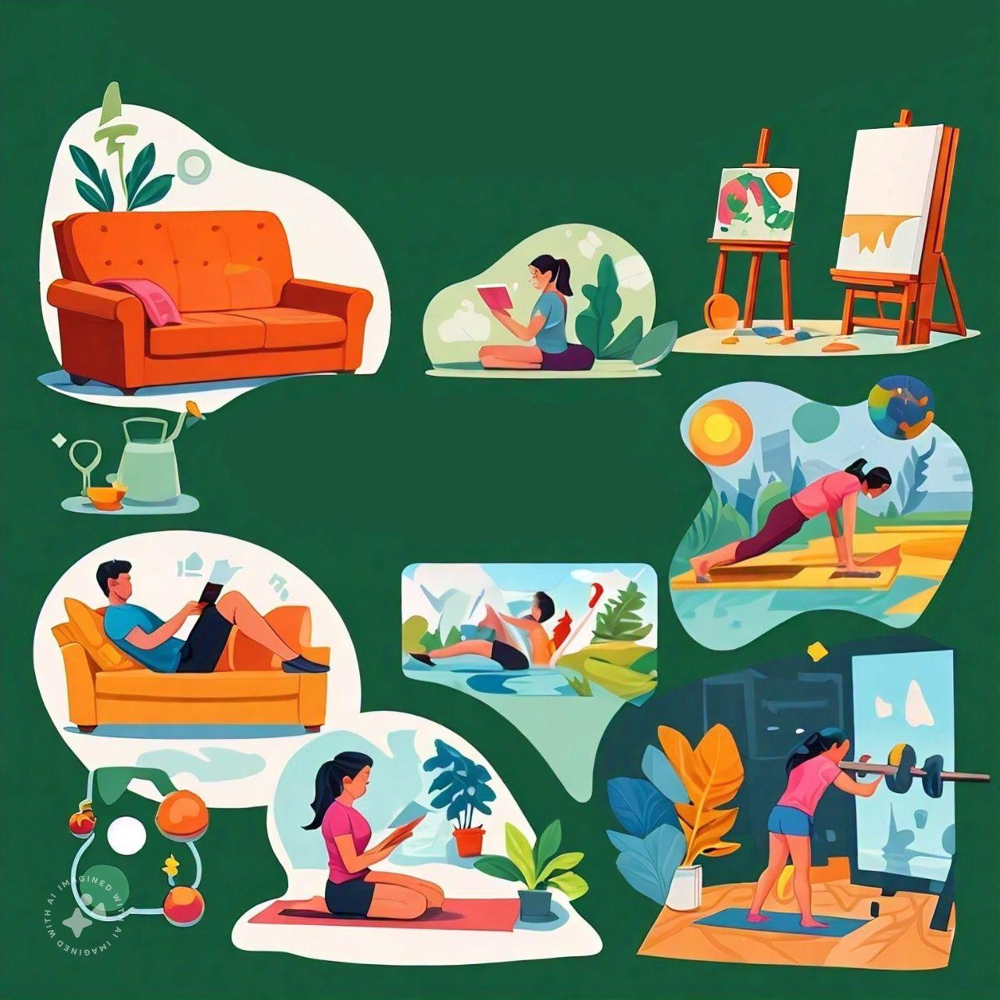

Digital Detox Tips
Take a break by reducing screen time, and reconnect with yourself.
Home
About
Meditation Timer
Benefits
Gallery
Contact

Schedule Time
Set specific times during the day for a digital detox. A structured schedule helps you stay mindful.

Limiting Screen
Gradually reduce your screen time by setting daily limits. This helps improve focus and well-being.

Schedule Hobbies
Engage in offline hobbies like reading, gardening, exercising, journaling, or painting to recharge.